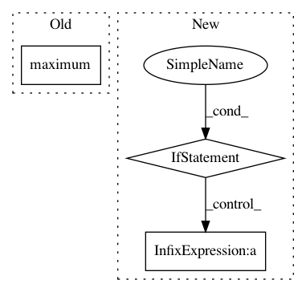

7e1e3ecee5930c527c7f1c89cdd4719d826095e5,chainercv/links/model/mask_rcnn/misc.py,,segm_to_mask,#Any#Any#Any#Any#,54
Before Change
for i, (bb, sgm) in enumerate(zip(bbox, segm)):
padded_mask[1:-1, 1:-1] = sgm
bb_height = np.maximum(bb[2] - bb[0], 1)
bb_width = np.maximum(bb[3] - bb[1], 1)
crop_mask = cv2.resize(padded_mask, (bb_width, bb_height))
crop_mask = crop_mask > 0.5
After Change
bb_height = bb[2] - bb[0]
bb_width = bb[3] - bb[1]
if bb_height == 0 or bb_width == 0:
continue
crop_mask = transforms.resize(padded_mask[None], (bb_width, bb_height))[0]
crop_mask = crop_mask > 0.5
y_min = max(bb[0], 0)
x_min = max(bb[1], 0)
y_max = max(min(bb[2], H), 0)
x_max = max(min(bb[3], W), 0)
y_offset = y_min - bb[0]
x_offset = x_min - bb[1]
mask[i, y_min:y_max, x_min:x_max] = crop_mask[
y_offset:y_offset + y_max - y_min,
x_offset:x_offset + x_max - x_min]
In pattern: SUPERPATTERN
Frequency: 3
Non-data size: 3
Instances
Project Name: chainer/chainercv
Commit Name: 7e1e3ecee5930c527c7f1c89cdd4719d826095e5
Time: 2019-03-05
Author: yuyuniitani@gmail.com
File Name: chainercv/links/model/mask_rcnn/misc.py
Class Name:
Method Name: segm_to_mask
Project Name: chainer/chainercv
Commit Name: 21e48c87172b4511688c66d3703f89e42a9c3444
Time: 2017-07-05
Author: Hakuyume@users.noreply.github.com
File Name: chainercv/evaluations/eval_detection_voc.py
Class Name:
Method Name: calc_detection_voc_prec_rec
Project Name: NifTK/NiftyNet
Commit Name: addcb13fb3dcd2cdbc32ac81611a78ac1c19b02f
Time: 2017-08-23
Author: egibson@cs.ucl.ac.uk
File Name: niftynet/network/dense_vnet.py
Class Name: DenseVNet
Method Name: layer_op